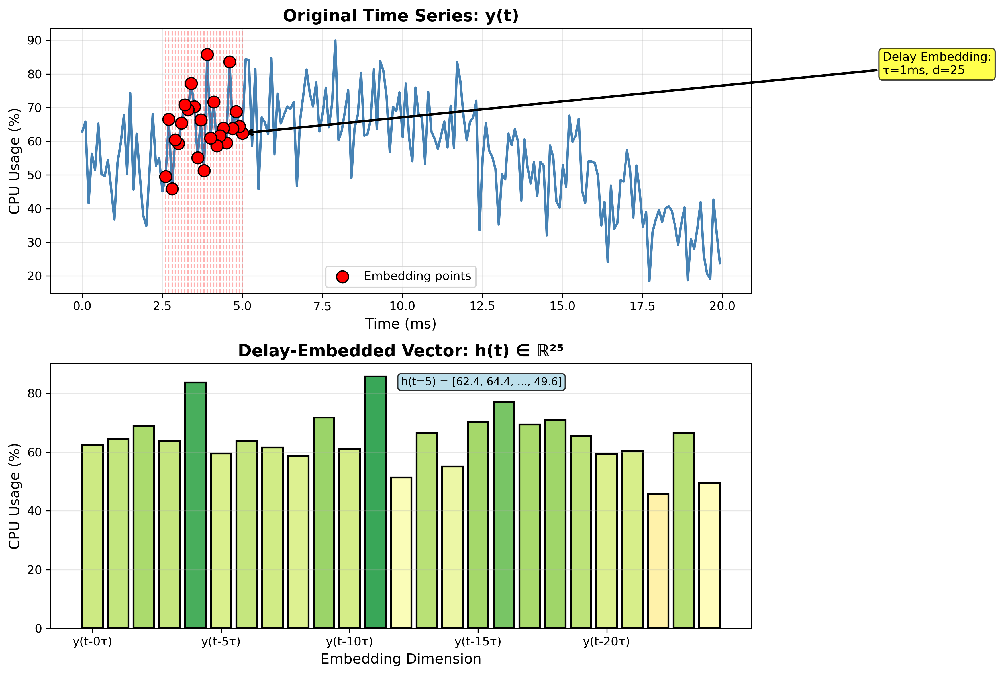
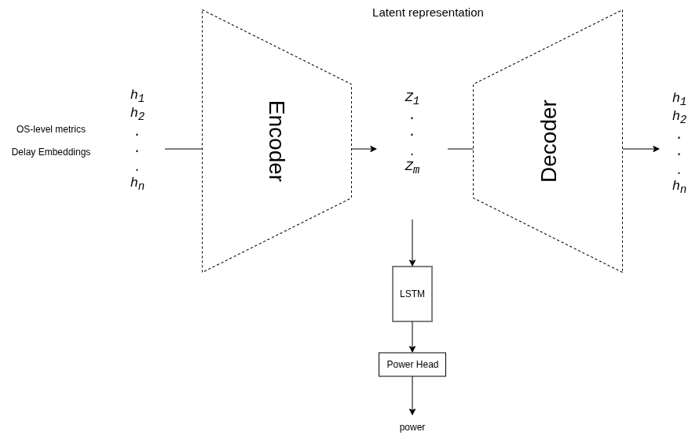
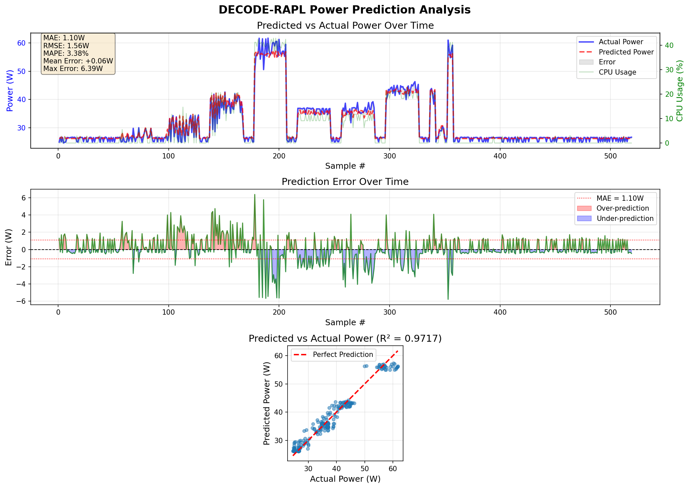
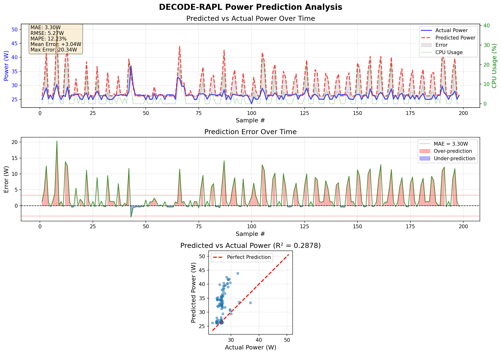
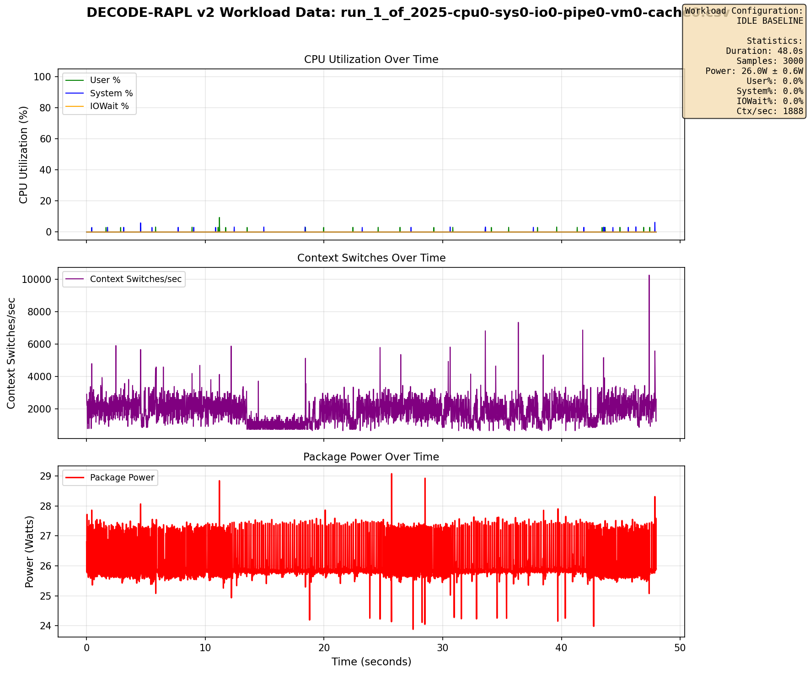
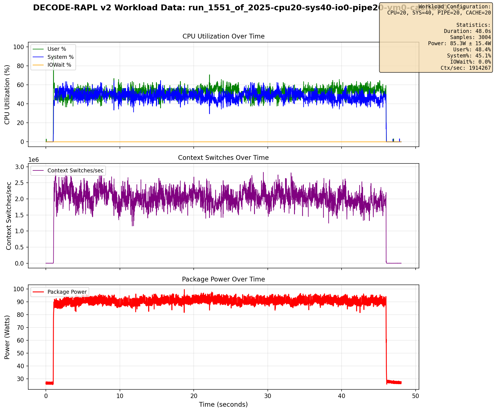
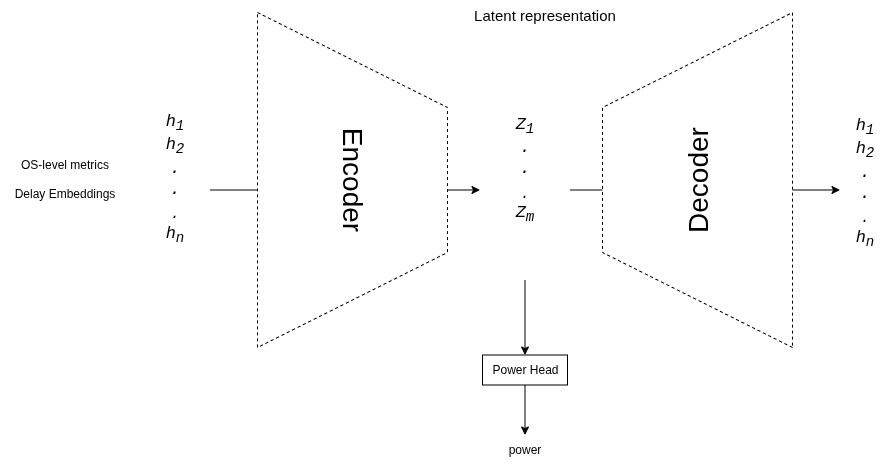
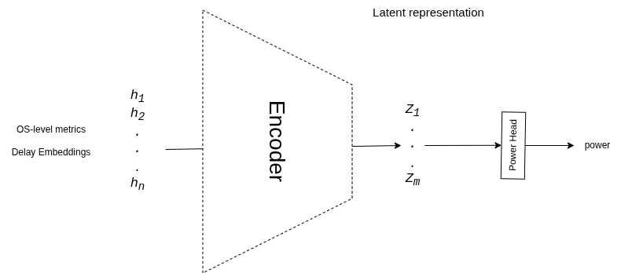
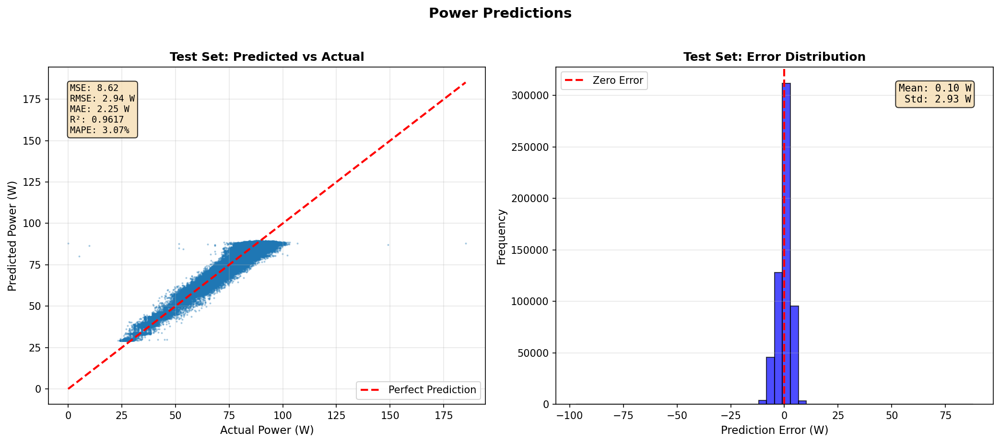
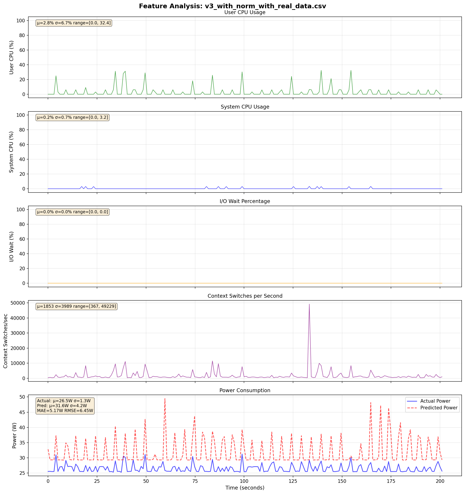

DECODE-RAPL
Predicting CPU Power from OS-Level Metrics
DElayed Embedding COnvolutional network for DEcoding RAPL
A Deep Learning Journey Through Multiple Architectures
Problem & Challenge
- RAPL (Running Average Power Limit) — Intel's hardware power meter — is unavailable in VMs
- Goal: Predict CPU package power (Watts) using only VM-visible OS metrics from
/proc
- Same CPU% ≠ Same Power: 50% CPU on AVX-512 matrix multiply (~45W) vs. scalar sorting (~30W)
- OS metrics miss microarchitectural details: instruction mix, cache behavior, pipeline utilization
- Power has temporal dynamics: thermal inertia, frequency scaling, ramp-up/cool-down
Core question: Can we reconstruct enough hidden CPU state from OS-level observables to predict power accurately?
Approach 1
MS-TCN: Multi-Scale Temporal CNN
- 19 system metrics at 62.5 Hz, 740K params
- Multi-scale convolutions (kernel 3/5/7)
- 6 dilated temporal blocks (dilation 1→32)
- Multi-head attention (8 heads)
- Validation: R² = 0.96, MAE = 3.50W
- Real workloads: Failed — data 98% skewed to <30W
Lesson: The problem isn't model complexity — it's the information content of the features.
Approach 2
v1: Delay Embedding + AE + LSTM
Key Idea: Takens' Theorem
- Treat CPU power as a dynamical system with hidden state
- Time-delayed copies reconstruct full state space
h(t) = [y(t), y(t-τ), ..., y(t-24τ)]- 4 features × 25 delays = 100-D input
- Features:
user%, system%, iowait%, log(ctx/sec)


Loss = α · Lpower + β · Lreconstruction
Approach 2
v1: Results — Great Offline, Bad Live

stress-ng test: R² = 0.97

Real workloads: R² = 0.29–0.40, +10W bias
Diagnosis: Model memorized stress-ng patterns. Training data lacked diversity. LSTM may be redundant given delay embedding already encodes temporal info.
Better Data: The "Gold Mine" Dataset
- Combinatorial workload generator: 6 stressors × multiple levels = 2,025 unique combos
- Go-based collector: 16ms interval, minimal overhead
- 5.8M samples, power range 24W–102W
- Includes true idle + real /proc reader workloads
- Multi-tau delay embedding (τ = 1, 4, 8)
- MinMaxScaler on train split; global shuffle

Pure idle (all stressors = 0)

Mixed: cpu=20, sys=40, pipe=20, cache=20
v2 & v3: Simplifying the Architecture
v2: AE + Power Head

- Removed LSTM — delay embedding has temporal info
- 268K params
- Overfit at epoch 2 without normalization
- Reconstruction loss competes with prediction
v3: Encoder + Power Head

- Removed decoder entirely — pure predictor
- Added MinMaxScaler normalization
- Offline: R² = 0.96, MAE = 2.16W
- Live: Still fails on idle & real workloads
Approach 4
v3: Best Offline, Still Fails Live

Offline: R² = 0.96, MAE = 2.16W

Live: Significant errors on real data
The offline/online gap persists. Near-perfect on shuffled test set, but fails on sequential live data.
Approach 5
v4: 1D-CNN Encoder + Power Head
- Replaced MLP with 1D Conv layers
- Input:
(batch, 4, 25) — per-feature temporal processing
- Kernels (5 steps ≈ 80ms) learn temporal motifs
- Switched to MAE loss (L1)
- Tested across τ = 1, 4, 8
- Offline: R² ≈ 0.95
Approach 5
v4: Live Predictions Across τ Values
- Idle baseline improved by ~3W (MAE loss helped)
- Spike overreaction persists across all τ values
Summary: The Consistent Pattern
| Approach | Architecture | Offline R² | Live Performance | Key Change |
|---|
| MS-TCN | Multi-scale CNN + Attention |
0.96 | Failed on real workloads |
19 raw features |
| v1 | AE + LSTM + Power Head |
0.97 | R² = 0.29–0.40 |
Delay embedding, 4 features |
| v2 | AE + Power Head |
— | Overfitting |
Removed LSTM |
| v3 | Encoder + Power Head |
0.96 | Failed on live |
Removed decoder, added norm |
| v4 | 1D-CNN + Power Head |
0.95 | Slightly better (+3W idle) |
Conv layers, MAE loss |
Root Cause: OS-level features fundamentally cannot capture microarchitectural details (instruction mix, cache behavior, pipeline utilization). The features, not the models, are the bottleneck.
Future Directions
- Alternative VM-visible metrics: guest CPU frequency, page fault rates, I/O throughput, eBPF tracing
- Post-processing calibration: per-workload-class correction factors (e.g., subtract +3W idle offset)
- Adversarial/domain-adaptation training: close the offline–online gap with domain-invariant latent representations
- Multi-machine generalization: train across same-architecture machines for architecture-level power models
- Hybrid approach: physics-informed constraints on power bounds + learned representations
The model works. The features don't.
The deep learning pipeline is validated. Progress requires richer input signals that expose more of the CPU's hidden microarchitectural state.